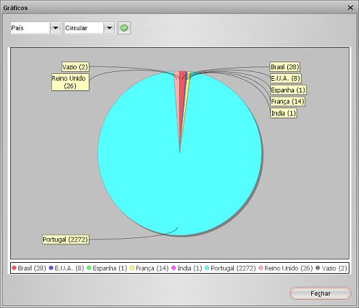

Criar um gráfico
Barra de menu > Ferramentas > Gráficos
Todos os módulos têm uma ferramenta de gráficos disponível. Esta ferramenta permite-lhe criar facilmente um gráfico simples. Na 1ª lista
pode selecionar o campo em que o gráfico se vai basear. Na 2ª lista pode selecionar o tipo de gráfico (como circular ou de barras).
Depois de selecionar, prima o botão. Os itens sem valor definido para o campo selecionado são representados pela categoria "vazio".

Exemplo
Digamos que gostaria de ter uma representação visual da classificação de cada filme. Tem mais filmes classificados com 4 estrelas do que
com três estrelas? Selecione o campo de classificação e prima o botão. É criado um gráfico circular baseado nas classificações dos filmes.